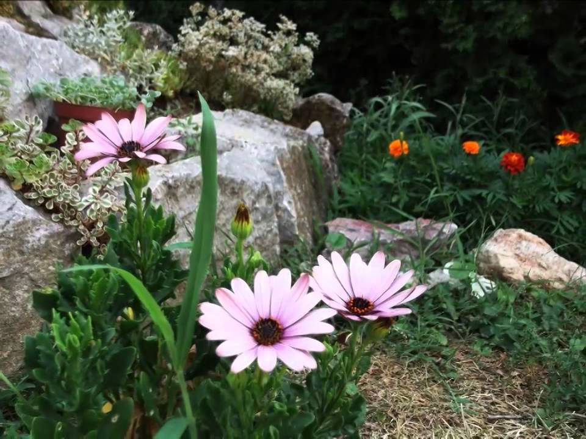

Welcome to žiedai
Vyriški žiedai
2020.10.29 13:03
close 0
Jūsų krepšelis yra tuščias!
Menu Moterims Žiedai Auskarai Segės Pakabukai Apyrankės Sąsagos Kaklo papuošalai Vyrams Sąsagos Apyrankės Ženkliukai Žiedai Kaklo papuošalai Sužadėtuvėms, vestuvėms Sužadėtuvių žiedai Vestuviniai žiedai Vaikams Verslo dovanos Kuponai Kita Juvelyrikos degustacijos Edukacinės pamokos Pasidaryk pats Menu Moterims Žiedai Auskarai Segės Pakabukai Apyrankės Sąsagos Kaklo papuošalai Vyrams Sąsagos Apyrankės Ženkliukai Žiedai Kaklo papuošalai Sužadėtuvėms, vestuvėms Sužadėtuvių žiedai Vestuviniai žiedai Vaikams Verslo dovanos Kuponai Kita Edukacinės pamokos Pasidaryk pats Pradžia Žiedai Patikslinti paiešką Parduodama (3) Reikia užsakyti (4) Patikslinti paiešką Kategorijos Moterims (656) Žiedai (304) Auskarai (200) Segės (14) Pakabukai (101) Apyrankės (19) Sąsagos (6) Kaklo papuošalai (24) Vyrams (148) Sąsagos (112) Apyrankės (9) Ženkliukai (10) Žiedai (7) Kaklo papuošalai (4) Sužadėtuvėms, vestuvėms (135) Sužadėtuvių žiedai (78) Vestuviniai žiedai (58) Vaikams (17) Verslo dovanos (17) Kuponai (3) Kita (0) Edukacinės pamokos (0) Pasidaryk pats (0)Žiedai
Vyriškas žiedas – unikalus ir ilgaamžis juvelyrikos dirbinys. Auksinis ar sidabrinis, klasikinis gaubtas ar modernus tiesus, siauras ar platus, matinis ar faktūrinis, puoštas graviūromis ar brangakmeniais – tai tik dalis pasirinkimų, kuriant individualų žiedą, skirtą tik Jums. Žiedai vyrams yra kokybiški ir išskirtiniai rankų darbo juvelyrikos dirbiniai, tinkantys tiek jauniems, tiek vyresnio amžio vyrams, savo įvaizdyje nepamirštantiems ir detalių. Kuriame pagal individualius užsakymus, todėl žiedas artinam žmogui gali tapti vienetine dovana.
Patikslinkite paiešką
Rikiuoti: Standartu Kaina nuo mažiausios Kaina nuo didžiausios Rodyti: 15 25 50 75 100Auksinis žiedas Double Dash
Vieno garsiausių pasaulyje lietuvių juvelyro Alex Šepkaus auksinis vyriškas žiedas "Double Dash".API..
Užsakyti
Į krepšelįAuksinis žiedas Lietuva
Viktorijos Orkinės raudono aukso žiedas "Lietuva"Žiedo dydis: 16,2Praba: Au 585Svoris: 6,81g..
673€
Į krepšelįAuksinis žiedas Vilnius
Viktorijos Orkinės geltono aukso žiedas "Vilnius"Žiedo dydis: 16,2Praba: Au 750Svoris: 8,03g..
825€
Vyriškas auksinis žiedas Lietuje su safyru
Viktorijos Orkinės vyriškas auksinis žiedas "Lietuje" su safyruPraba: Au 750Svoris: 14,57gAkmuo:Safy..
Užsakyti
Į krepšelįVyriškas auksinis žiedas su deimantu
Viktorijos Orkinės vyriškas auksinis žiedas su deimantuŽiedo dydis: 19,2Praba: Au 585Svoris: 5,59gAk..
1 067€
Vyriškas kalinėtas žiedas iš aukso
Viktorijos Orkinės vyriškas kalinėtas žiedas iš aukso..
Užsakyti
Vyriškas žiedas iš sidabro ir aukso
Viktorijos Orkinės vyriškas žiedas iš sidabro ir aukso..
Užsakyti
Rodo 1 iki 7 iš 7 (1 Puslapių)Kontaktai
Polocko g. 2, Vilnius +370 600 22700 viktorija@v2o.ltFollow Us
Pirkėjams
Pristatymas Taisyklės Individualus užsakymas KontaktaiInformacija
Apie v2o Apie mus spaudoje Autoriai Žiedo dydisEN/LT
v2o juvelyrikos namai © 2020
